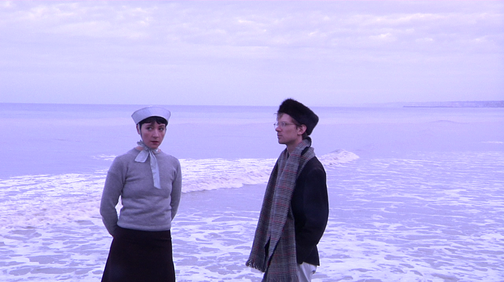

Recorded in Eau Claire, Wisconsin during a sweltering summer, the 11 songs on Flora Hibberd’s
debut studio album were produced by Shane Leonard (Anna Tivel, JE Sunde) and feature musicians
JT Bates (Bon Iver, Taylor Swift, Bonny Light Horseman), Pat Keene (Humbird), pedal steel player
Ben Lester (Sufjan Stevens, The Tallest Man On Earth) and singer-songwriter JE Sunde on backing
vocals, as well as Flora’s longtime collaborator Victor Claass.
Flora Hibberd was born in London. In 2022 she signed with American label 22Twenty, and that October
played a live session on BBC 6Music at the invitation of Cerys Matthews. In 2023 she played support
shows for Porridge Radio, Kate Bollinger, Will Sheff, Steve Gunn and Skullcrusher. She lives in Paris.
A thing of beauty, the music of Flora Hibberd... Whatever she’s put out thus far is absolutely perfect
Cerys Matthews, BBC 6Music
It doesn’t get any better than this, haunting, beautiful and timeless… I can’t wait to hear more
Folk Radio UK
One of the foremost faces of a rising movement in contemporary folk music
For Folk’s Sake
A spectacular newcomer
Beehive Candy


